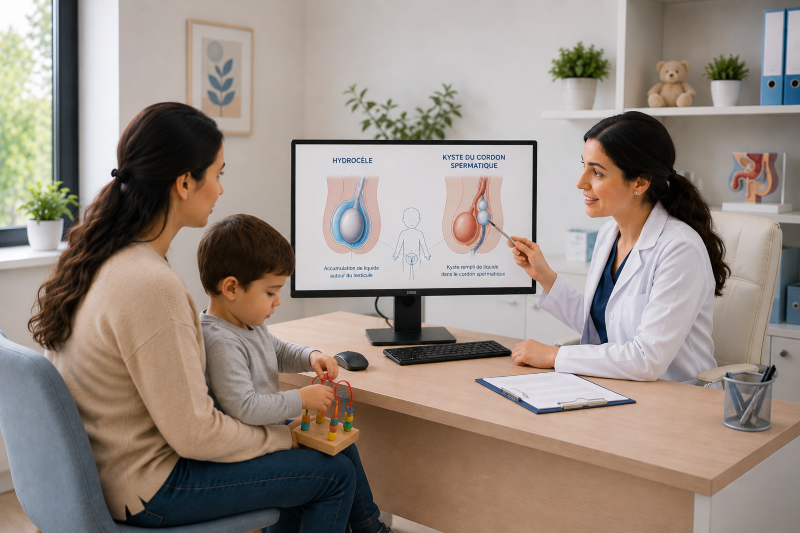

Hydrocèle et kyste du cordon spermatique chez l'enfant
الاستسقاء والكيسة الحبلية عند الطفل
Tout ce que les parents doivent savoir sur l'hydrocèle et le kyste du cordon spermatique : définition, types, diagnostic, traitement chirurgical et récupération.
كل ما يجب على الأولياء معرفته عن الاستسقاء والكيسة الحبلية: التعريف، الأنواع، التشخيص، العلاج الجراحي والتعافي.

Qu'est-ce que l'hydrocèle ?
ما هو الاستسقاء؟
L'hydrocèle est une accumulation de liquide dans la bourse scrotale (sac qui contient les testicules). Chez l'enfant, elle résulte presque toujours d'une persistance du canal péritonéo-vaginal (canal de Nück), une structure embryonnaire qui normalement se ferme avant la naissance. Lorsque ce canal reste ouvert, le liquide péritonéal (liquide provenant de l'abdomen) s'écoule dans la bourse et s'y accumule, provoquant un gonflement unilatéral ou bilatéral du scrotum.
الاستسقاء هو تراكم السوائل في الكيس الصفني (الكيس الذي يحتوي على الخصيتين). عند الطفل، ينتج دائمًا تقريبًا عن استمرار القناة البريتونية المهبلية (قناة نوك)، وهي بنية جنينية تُغلق عادةً قبل الولادة. عندما تبقى هذه القناة مفتوحة، يتدفق السائل البريتوني (السائل القادم من البطن) إلى الصفن ويتجمع فيه، مما يسبب تورمًا أحاديًا أو ثنائي الجانب في الصفن.
Types d'hydrocèle
أنواع الاستسقاء
1. Hydrocèle communicante
1. الاستسقاء التواصلي
- Le canal péritonéo-vaginal est partiellement ouvert, permettant la communication entre l'abdomen et la bourse
- Le gonflement varie en taille au cours de la journée : augmente quand l'enfant pleure, tousse ou fait effort (augmentation de la pression abdominale)
- Le gonflement diminue ou disparaît quand l'enfant est allongé ou au repos
- Ce type nécessite une intervention chirurgicale car il ne se résorbe pas spontanément et présente un risque d'évolution vers une hernie inguinale
- القناة البريتونية المهبلية مفتوحة جزئيًا، مما يسمح بالتواصل بين البطن والصفن
- التورم يتغير في الحجم خلال اليوم: يزداد عندما يبكي الطفل أو يسعل أو يبذل جهدًا (زيادة ضغط البطن)
- التورم يقل أو يختفي عندما يكون الطفل مستلقيًا أو في راحة
- هذا النوع يتطلب تدخلًا جراحيًا لأنه لا يختفي تلقائيًا ويحمل خطر التطور إلى فتق إربي
2. Hydrocèle non communicante
2. الاستسقاء غير التواصلي
- Le canal péritonéo-vaginal est fermé, mais du liquide reste piégé dans la bourse
- Le gonflement est constant, ne varie pas avec la position ou l'activité
- Fréquente chez les nouveau-nés et les nourrissons
- Dans 80 à 90 % des cas, elle se résorbe spontanément avant l'âge de 1 à 2 ans
- Si persistance au-delà de 2 ans, une intervention chirurgicale peut être envisagée
- القناة البريتونية المهبلية مغلقة، لكن السائل يبقى محبوسًا في الصفن
- التورم ثابت، لا يتغير مع الوضعية أو النشاط
- شائع عند المواليد الجدد والرضع
- في 80 إلى 90% من الحالات، يختفي تلقائيًا قبل سن 1 إلى 2 سنة
- إذا استمر بعد 2 سنة، يمكن النظر في تدخل جراحي
3. Hydrocèle encystée
3. الاستسقاء المحبوس
- Formation kystique isolée dans le cordon spermatique, sans communication avec la bourse ni l'abdomen
- Apparaît comme une masse ronde, lisse et indolore dans l'aine ou le haut du scrotum
- Ne se résorbe pas spontanément, traitement chirurgical si gênante ou en augmentation de taille
- تكوين كيسي معزول في الحبل المنوي، بدون تواصل مع الصفن أو البطن
- يظهر ككتلة دائرية، ناعمة وغير مؤلمة في الفخذ أو أعلى الصفن
- لا يختفي تلقائيًا، علاج جراحي إذا كان مزعجًا أو يزداد في الحجم
Kyste du cordon spermatique
الكيسة الحبلية
Le kyste du cordon spermatique est une formation kystique bénigne située le long du cordon spermatique, dans l'aine ou le haut du scrotum. Il peut avoir plusieurs origines :
الكيسة الحبلية هي تكوين كيسي حميد يقع على طول الحبل المنوي، في الفخذ أو أعلى الصفن. قد يكون لها عدة أصول:
- Kyste du canal de Nück (hydrocèle encystée) : persistance d'une partie du canal péritonéo-vaginal sans communication
- Kyste épididymaire : kyste rempli de liquide développé sur l'épididyme (structure située au-dessus du testicule)
- Kyste séreux du cordon : accumulation de liquide séreux dans les tissus du cordon
- Kyste dermique : kyste contenant des tissus cutanés (rare)
- كيسة قناة نوك (الاستسقاء المحبوس): استمرار جزء من القناة البريتونية المهبلية بدون تواصل
- الكيسة البربخية: كيسة مليئة بالسائل تتطور على البربخ (الهيكل الواقع فوق الخصية)
- الكيسة المصلية الحبلية: تراكم سائل مصلي في أنسجة الحبل
- الكيسة الجلدية: كيسة تحتوي على أنسجة جلدية (نادرة)
Le kyste du cordon se présente comme une masse ronde ou ovale, mobile, indolore et translucide à la transillumination. Il ne présente pas de danger en soi, mais peut être gênant esthétiquement ou mécaniquement.
تظهر الكيسة الحبلية كـ كتلة دائرية أو بيضاوية، متحركة، غير مؤلمة وشفافة عند التنور. لا تشكل خطرًا بحد ذاتها، لكنها قد تكون مزعجة جماليًا أو ميكانيكيًا.
Diagnostic
التشخيص
Examen clinique
الفحص السريري
- Inspection : gonflement du scrotum ou de l'aine, uni- ou bilatéral
- Palpation : masse molle, fluctuante, indolore, non réductible (contrairement à la hernie)
- Transillumination : le liquide laisse passer la lumière (test à la lampe de poche dans une pièce sombre)
- Test de compression : l'hydrocèle communicante diminue quand l'enfant est allongé ; l'hydrocèle non communicante reste inchangée
- Différence avec la hernie inguinale : la hernie contient des viscères (intestin, omentum) et peut être réduite ; l'hydrocèle contient du liquide et est translucide
- الفحص بالعين: تورم الصفن أو الفخذ، أحادي أو ثنائي الجانب
- الجس: كتلة طرية، متموجة، غير مؤلمة، غير قابلة للإرجاع (على عكس الفتق)
- التنور: السائل يسمح بمرور الضوء (اختبار بمصباح يدوي في غرفة مظلمة)
- اختبار الضغط: الاستسقاء التواصلي يقل عند استلقاء الطفل؛ الاستسقاء غير التواصلي يبقى دون تغيير
- الفرق عن الفتق الإربي: الفتق يحتوي على أحشاء (أمعاء، شبكة) ويمكن إرجاعه؛ الاستسقاء يحتوي على سائل وشفاف
Examens complémentaires
الفحوصات التكميلية
- Échographie scrotale : examen de première intention, confirme la nature liquidienne de la masse, évalue le testicule et l'épididyme, élimine une tumeur
- Échographie abdominale : en cas d'hydrocèle communicante, recherche d'une hernie inguinale associée ou d'anomalies abdominales
- Scanner ou IRM : rarement nécessaire, réservé aux cas complexes ou aux masses atypiques
- الموجات فوق الصوتية الصفنية: الفحص الأول، يؤكد طبيعة الكتلة السائلة، يقيم الخصية والبربخ، يستبعد الورم
- الموجات فوق الصوتية البطنية: في حالة الاستسقاء التواصلي، البحث عن فتق إربي مصاحب أو شواذ بطنية
- التصوير المقطعي أو الرنين المغناطيسي: نادرًا ما يكون ضروريًا، محجوز للحالات المعقدة أو الكتل غير النمطية
📊 Statistiques et données clés
📊 الإحصائيات والبيانات الرئيسية
- Prévalence de l'hydrocèle : 1 à 2 % des nouveau-nés masculins
- Prévalence du kyste du cordon : moins de 1 % des enfants
- Forme bilatérale : 5 à 10 % des hydrocèles
- Résorption spontanée de l'hydrocèle non communicante : 80 à 90 % avant 2 ans
- Association hernie-hydrocèle : 10 à 20 % des cas d'hydrocèle communicante
- Âge d'intervention chirurgicale : généralement entre 1 et 2 ans si persistance
- Taux de réussite chirurgicale : supérieur à 95 %
- Taux de récidive : inférieur à 2 %
- Taux de complications : inférieur à 3 % (hématome, infection, récidive)
- انتشار الاستسقاء: 1 إلى 2% من المواليد الذكور الجدد
- انتشار الكيسة الحبلية: أقل من 1% من الأطفال
- الشكل الثنائي: 5 إلى 10% من حالات الاستسقاء
- اختفاء الاستسقاء غير التواصلي تلقائيًا: 80 إلى 90% قبل 2 سنة
- ارتباط الفتق بالاستسقاء: 10 إلى 20% من حالات الاستسقاء التواصلي
- سن التدخل الجراحي: عادةً بين 1 و2 سنة إذا استمر
- معدل النجاح الجراحي: يتجاوز 95%
- معدل الانتكاس: أقل من 2%
- معدل المضاعفات: أقل من 3% (ورم دموي، عدوى، انتكاس)
Traitement chirurgical
العلاج الجراحي
Attitude expectante
المراقبة الانتظارية
Pour l'hydrocèle non communicante, une attitude expectante est recommandée car la grande majorité des cas se résorbent spontanément avant l'âge de 2 ans. Un suivi clinique régulier est suffisant.
بالنسبة لـ الاستسقاء غير التواصلي، يُوصى بالمراقبة الانتظارية لأن الغالبية العظمى من الحالات تختفي تلقائيًا قبل سن 2 سنة. المتابعة السريرية الدورية كافية.
Indications chirurgicales
المؤشرات الجراحية
- Hydrocèle communicante : indication chirurgicale formelle car risque d'évolution vers une hernie inguinale et d'étranglement
- Hydrocèle non communicante persistante au-delà de 2 ans
- Hydrocèle de grande taille gênant la marche, l'hygiène ou le confort
- Kyste du cordon spermatique en augmentation de taille ou gênant
- Hydrocèle récidivée après résorption apparente
- الاستسقاء التواصلي: مؤشر جراحي قاطع لأنه يحمل خطر التطور إلى فتق إربي واختناق
- الاستسقاء غير التواصلي المستمر بعد 2 سنة
- استسقاء كبير الحجم يعيق المشي، النظافة أو الراحة
- الكيسة الحبلية المتزايدة الحجم أو المزعجة
- استسقاء متكرر بعد اختفاء ظاهري
Technique chirurgicale : herniorraphie avec drainage de l'hydrocèle
التقنية الجراحية: ترميم الفتق مع تصريف الاستسقاء
- Incision inguinale (même approche que pour la hernie inguinale)
- Exploration du canal inguinal : identification et ouverture du sac péritonéal (processus vaginalis)
- Drainage du liquide de l'hydrocèle
- Résection et fermeture du sac (ligature haute du processus vaginalis)
- Vérification du testicule et de sa position
- Fermeture du canal inguinal pour prévenir la récidive
- شق إربي (نفس النهج كالفتق الإربي)
- تنقيب القناة الإربية: تحديد وفتح الكيس البريتوني (العملية المهبلية)
- تصريف سائل الاستسقاء
- استئصال وإغلاق الكيس (رباط عالٍ للعملية المهبلية)
- التحقق من الخصية وموقعها
- إغلاق القناة الإربية لمنع الانتكاس
Déroulement de l'intervention
سير التدخل الجراحي
- Anesthésie générale
- Durée : 30 à 45 minutes
- Hospitalisation : ambulatoire ou courte durée (24 heures)
- Pansement : compressif léger pendant 48 heures
- Antalgiques : paracétamol pendant 2 à 3 jours
- Retour aux activités normales : 3 à 5 jours
- Consultation de contrôle à J7 et J30
- التخدير العام
- المدة: 30 إلى 45 دقيقة
- الاستشفاء: في العيادة الخارجية أو قصير المدة (24 ساعة)
- الضمادة: ضغط خفيف لمدة 48 ساعة
- المسكنات: الباراسيتامول لمدة 2 إلى 3 أيام
- العودة إلى الأنشطة العادية: 3 إلى 5 أيام
- زيارة المتابعة في اليوم 7 واليوم 30
Complications et suivi
المضاعفات والمتابعة
Complications possibles
المضاعفات المحتملة
- Hématome scrotal : collection de sang dans le scrotum, généralement résorbée spontanément
- Infection de la plaie : rare, traitée par antibiotiques
- Récidive de l'hydrocèle : inférieure à 2 % si la ligature est correctement réalisée
- Atrophie testiculaire : extrêmement rare, liée à une lésion vasculaire lors de l'intervention
- Hydrocele réactionnelle : apparition d'un nouvel hydrocèle après chirurgie, généralement transitoire
- ورم دموي صفني: تجمع دم في الصفن، غالبًا يختفي تلقائيًا
- عدوى الجرح: نادرة، تُعالج بالمضادات الحيوية
- انتكاس الاستسقاء: أقل من 2% إذا أُجري الرباط بشكل صحيح
- ضمور الخصية: نادر جدًا، مرتبط بإصابة وعائية أثناء التدخل
- استسقاء تفاعلي: ظهور استسقاء جديد بعد الجراحة، عادةً مؤقت
Suivi postopératoire
المتابعة بعد العملية
- Surveillance de la cicatrisation et du gonflement scrotal
- Contrôle de la position et du volume du testicule à chaque consultation
- Échographie scrotale de contrôle si persistance d'un gonflement
- Information des parents sur les signes de récidive (gonflement réapparaissant)
- مراقبة التئام الجرح وتورم الصفن
- التحقق من موقع وحجم الخصية في كل استشارة
- الموجات فوق الصوتية الصفنية للمتابعة إذا استمر التورم
- إعلام الأولياء بعلامات الانتكاس (عودة التورم)
❓ Questions fréquentes des parents
❓ الأسئلة الشائعة من الأهالي
Oui, c'est très fréquent. Chez les nouveau-nés, l'hydrocèle non communicante est présente dans 1 à 2 % des cas et est souvent remarquée dès les premiers jours de vie. Le gonflement est généralement painless, doux et translucide (la lumière passe à travers). Dans 80 à 90 % des cas, ce gonflement disparaît spontanément avant l'âge de 2 ans sans aucun traitement. Il suffit de surveiller l'évolution lors des consultations pédiatriques de routine. Si le gonflement persiste au-delà de 2 ans, augmente de taille, ou devient dur et douloureux, une consultation spécialisée est nécessaire.
نعم، هذا شائع جدًا. عند المواليد الجدد، الاستسقاء غير التواصلي موجود في 1 إلى 2% من الحالات وغالبًا ما يُلاحظ من الأيام الأولى من الحياة. التورم عادةً غير مؤلم، ناعم وشفاف (الضوء يمر خلاله). في 80 إلى 90% من الحالات، يختفي هذا التورم تلقائيًا قبل سن 2 سنوات بدون أي علاج. يكفي مراقبة التطور أثناء الاستشارات الطبية الروتينية للأطفال. إذا استمر التورم بعد 2 سنة، أو ازداد حجمًا، أو أصبح صلبًا ومؤلمًا، فإن استشارة متخصصة ضرورية.
La distinction est essentielle car la hernie peut être dangereuse. Voici les clés : À la palpation, l'hydrocèle est une masse molle, fluctuante et indolore qui contient du liquide ; la hernie est une masse plus dure, parfois réductible, qui contient de l'intestin. À la transillumination (lampe de poche dans le noir), l'hydrocèle devient rougeoyante car le liquide laisse passer la lumière ; la hernie reste opaque. En position couchée, l'hydrocèle communicante diminue ; la hernie peut aussi diminuer mais réapparaît à la pression abdominale. En cas de doute, une échographie scrotale permet de trancher définitivement. N'hésitez jamais à consulter si vous n'êtes pas sûr.
التمييز ضروري لأن الفتق قد يكون خطيرًا. إليكم المفاتيح: عند الجس، الاستسقاء كتلة طرية، متموجة وغير مؤلمة تحتوي على سائل؛ الفتق كتلة أكثر صلابة، قابلة للإرجاع أحيانًا، تحتوي على أمعاء. عند التنور (مصباح يدوي في الظلام)، الاستسقاء يضيء باللون الأحمر لأن السائل يسمح بمرور الضوء؛ الفتق يبقى معتمًا. في وضعية الاستلقاء، الاستسقاء التواصلي يقل؛ الفتق قد يقل أيضًا لكنه يعود عند ضغط البطن. في حالة الشك، الموجات فوق الصوتية الصفنية تسمح بالحسم النهائي. لا تترددوا أبدًا في الاستشارة إذا لم تكونوا متأكدين.
Pour l'hydrocèle non communicante, on peut attendre jusqu'à 2 ans car 80 à 90 % des cas se résorbent spontanément. Au-delà de 2 ans, si le gonflement persiste ou s'agrandit, l'intervention chirurgicale est recommandée. Pour l'hydrocèle communicante, on n'attend pas : l'intervention est programmée dès le diagnostic, généralement entre 6 et 18 mois, car le risque d'évolution vers une hernie inguinale étranglée est réel. Le kyste du cordon spermatique, lui, ne se résorbe jamais spontanément : l'intervention est proposée dès qu'il est diagnostiqué, surtout s'il est en croissance.
بالنسبة لـ الاستسقاء غير التواصلي، يمكن الانتظار حتى سنتين لأن 80 إلى 90% من الحالات تختفي تلقائيًا. بعد 2 سنوات، إذا استمر التورم أو تضخم، يُوصى بالتدخل الجراحي. بالنسبة لـ الاستسقاء التواصلي، لا ننتظر: يُبرمج التدخل فور التشخيص، عادةً بين 6 و18 شهرًا، لأن خطر التطور إلى فتق إربي مختنق حقيقي. أما الكيسة الحبلية، فهي لا تختفي أبدًا تلقائيًا: يُقترح التدخل فور تشخيصها، خاصة إذا كانت في نمو.
Non, l'intervention chirurgicale pour hydrocèle ou kyste du cordon n'affecte pas la fertilité future quand elle est réalisée correctement. Au contraire, laisser une hydrocèle communicante non traitée peut être plus risqué car une hernie étranglée peut léser les vaisseaux sanguins du testicule. Pendant l'opération, le chirurgien pédiatre prend grand soin de préserver les vaisseaux spermatiques (artère et veine spermatiques) et le canal déférent (conduit qui transporte les spermatozoïdes). Le risque d'atrophie testiculaire par lésion vasculaire est extrêmement faible (moins de 0,5 %). Après l'intervention, le testicule se développe normalement et la fonction reproductive future est préservée.
لا، التدخل الجراحي للاستسقاء أو الكيسة الحبلية لا يؤثر على الخصوبة المستقبلية عندما يُجرى بشكل صحيح. على العكس، ترك استسقاء تواصلي بدون علاج قد يكون أكثر خطورة لأن الفتق المختنق قد يُلحق الضرر بالأوعية الدموية للخصية. أثناء العملية، يحرص جراح الأطفال بشدة على الحفاظ على الأوعية المنوية (الشريان والوريد المنويين) والقناة الدافقة (القناة التي تنقل الحيوانات المنوية). خطر ضمور الخصية بسبب إصابة وعائية ضئيل جدًا (أقل من 0.5%). بعد التدخل، تتطور الخصية بشكل طبيعي وتحفظ الوظيفة الإنجابية المستقبلية.
Oui, dans la grande majorité des cas, l'intervention est réalisée en ambulatoire (chirurgie de jour). L'enfant arrive le matin à jeun, est opéré sous anesthésie générale, et rentre chez lui le jour même ou le lendemain matin. L'hospitalisation de 24 heures peut être préférée pour les nourrissons de moins de 6 mois ou en cas d'hydrocèle bilatérale. La durée de l'opération est de 30 à 45 minutes. Les suites sont généralement très simples : douleur modérée contrôlée par du paracétamol, pansement léger pendant 48 heures, et retour aux activités normales en 3 à 5 jours. Une visite de contrôle est prévue à J7 et J30.
نعم، في الغالبية العظمى من الحالات، يُجرى التدخل في العيادة الخارجية (جراحة يومية). يأتي الطفل صباحًا ببطن فارغ، يُجرى له التدخل تحت تخدير عام، ويعود إلى بيته في نفس اليوم أو صباح اليوم التالي. الاستشفاء لمدة 24 ساعة قد يُفضّل للرضع دون 6 أشهر أو في حالة استسقاء ثنائي الجانب. مدة العملية 30 إلى 45 دقيقة. النتائج عادة بسيطة جدًا: ألم معتدل يُسيطر عليه الباراسيتامول، ضمادة خفيف لمدة 48 ساعة، والعودة إلى الأنشطة العادية خلال 3 إلى 5 أيام. زيارة مراقبة مُبرمجة في اليوم 7 واليوم 30.
L'incision se fait dans le sillon inguinal naturel (le pli de l'aine), ce qui la rend très discrète. La cicatrice mesure environ 2 à 3 cm et s'estompe considérablement avec le temps. Chez l'enfant, la cicatrisation est généralement excellente et la cicatrice devient quasi invisible après quelques mois. En cas d'approche laparoscopique (coelioscopie), les cicatrices sont encore plus petites (3 incisions de 3 à 5 mm). Il est important de protéger la cicatrice du soleil les premiers mois pour éviter une hyperpigmentation. Aucun pansement spécifique n'est nécessaire au-delà de J3.
يُجرى الشق في الأخدود الإربي الطبيعي (ثنية الفخذ)، مما يجعله غير ملحوظ جدًا. الندبة تبلغ حوالي 2 إلى 3 سم وتتلاشى بشكل كبير مع الوقت. عند الطفل، التئام الجرح عادة ممتاز والندبة تصبح شبه غير مرئية بعد عدة أشهر. في حالة النهج بالمنظار (التنظير البطني)، الندبات أصغر (3 شقوق بـ 3 إلى 5 ملم). من المهم حماية الندبة من الشمس في الأشهر الأولى لتجنب التصبغ الزائد. لا يُحتاج لضمادة خاصة بعد اليوم 3.
Le taux de récidive est très faible, inférieur à 2 %, quand l'intervention est réalisée par un chirurgien pédiatre expérimenté avec une ligature haute correcte du processus vaginalis. Une récidive peut survenir si le sac péritonéal n'a pas été complètement fermé ou si une communication persistante minime n'a pas été détectée. Dans ce cas (rare), une réintervention est proposée. Parfois, un hydrocèle réactionnel peut apparaître dans les semaines suivant l'opération : il s'agit d'un épanchement liquiden transitoire lié à l'inflammation postopératoire, qui se résorbe spontanément en quelques semaines sans traitement.
معدل الانتكاس ضئيل جدًا، أقل من 2%، عندما يُجرى التدخل من قبل جراح أطفال متمرس مع رباط عالٍ صحيح للعملية المهبلية. قد يحدث انتكاس إذا لم يُغلق الكيس البريتوني بالكامل أو إذا بقيت تواصلات طفيفة غير مكتشفة. في هذه الحالة (نادرة)، يُقترح إعادة التدخل. أحيانًا، قد يظهر استسقاء تفاعلي في الأسابيع التالية للعملية: إنه تراكم سائل مؤقت مرتبط بالالتهاب بعد العملية، يختفي تلقائيًا خلال أسابيع قليلة بدون علاج.
Les suites sont généralement simples, mais surveillez ces signes : Fièvre au-delà de 38,5 °C persistant plus de 24 heures ; gonflement scrotal qui augmente au lieu de diminuer après J3 ; rougeur, chaleur ou écoulement purulent au niveau de la plaie ; douleur intense non calmée par le paracétamol ; vomissements répétés ou refus de manger ; lethargie ou comportement inhabituel. En cas de l'un de ces signes, contactez immédiatement le chirurgien ou présentez-vous aux urgences. Le gonflement scrotal léger et une légère ecchymose (bleu) sont normaux les premiers jours et ne doivent pas inquiéter.
النتائج عادة بسيطة، لكن راقبوا هذه العلامات: حمى تتجاوز 38.5 درجة مئوية تستمر أكثر من 24 ساعة؛ تورم صفني يزداد بدل أن يقل بعد اليوم 3؛ احمرار، حرارة أو إفراز صديدي عند الجرح؛ ألم شديد لا يُهدأه الباراسيتامول؛ قيء متكرر أو رفض الأكل؛ خمول أو سلوك غير معتاد. في حالة واحدة من هذه العلامات، اتصلوا فورًا بالجراح أو اذهبوا إلى الطوارئ. التورم الصفني الخفيف والكدمة الطفيفة (زرقة) طبيعية في الأيام الأولى ولا يجب أن تقلق.
Vous pouvez prendre rendez-vous par WhatsApp au +213 558 45 60 19 ou en appelant directement. Le cabinet du Dr Ziane Khodja est situé à Ouled Moussa, Boumerdès. Pour un gonflement scrotal, la consultation permet de différencier l'hydrocèle bénigne d'une hernie inguinale ou d'autres pathologies (torsion testiculaire, kyste, tumeur) grâce à l'examen clinique et à l'échographie scrotale. En cas de torsion testiculaire (douleur soudaine, intense, avec gonflement et nausées), il s'agit d'une urgence absolue : dirigez-vous immédiatement aux urgences sans attendre de rendez-vous.
يمكنكم حجز موعد عبر واتساب على +213 558 45 60 19 أو بالاتصال المباشر. عيادة الدكتورة زيان خوجة تقع في أولاد موسى، بومرداس. للتورم الصفني، تسمح الاستشارة بالتمييز بين الاستسقاء الحميد والفتق الإربي أو أمراض أخرى (اللفافة الخصية، الكيسة، الورم) بفضل الفحص السريري والموجات فوق الصوتية الصفنية. في حالة اللفافة الخصية (ألم مفاجئ، حاد، مع تورم وغثيان)، هذا طارئ مطلق: اذهبوا فورًا إلى الطوارئ دون انتظار موعد.
Votre enfant présente un gonflement du scrotum ?
طفلكم يعاني من تورم في الصفن؟
Prenez rendez-vous pour un examen clinique. Une évaluation rapide permet de distinguer l'hydrocèle bénin d'une hernie inguinale ou d'autres pathologies nécessitant un traitement.
أخذوا موعدًا للفحص السريري. التقييم السريع يسمح بالتمييز بين الاستسقاء الحميد والفتق الإربي أو أمراض أخرى تتطلب علاجًا.